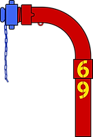
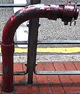

The Swan Neck that used to be numbered 69
[Sources for this page]Sources for this page
- Google | Google Maps (Street View) | https://www.google.com/maps/
- Lands Department (HKSAR Government) | GeoInfo Map | https://www.map.gov.hk/gm/map/ | I learnt about this source from snowshine12345 https://www.discuss.com.hk/viewthread.php?tid=29167296&page=1#pid520626555
- Waterworks Office (British Hong Kong), Y1972-M04 to Y1975-M03 | HKRS287-1-683 Fire Hydrant - Island - Records of Installation, Removals, Changes of Position or Type | Public Records Office, Government Records Service (HKSAR Government) | No digital copy available, you must visit the Hong Kong Public Records Building and borrow the report to read the physical copy (you can't bring it outside the building so you must read it there)
 |
| Digital recreation of red two-section Swan Neck 69 (later 30249) with its cap painted blue |
| Recreated in Y2026-M08 |
By chance, I spotted a Swan Neck made of two sections, which is rare by my observation. It is on King's Road near Westlands Road, currently numbered 30249. I was on a moving tram when I first saw it, so I did not manage to get any photos and I decided to check it out in Google Maps street view that night. That was how I found out about its previous number - 69. Okay, that's a funny number, anything else that is interesting? Yes!
Its early history
69 was installed on a 3-inch main on (or a few days before) Y1975-M01-D18, but not at its current location. It was initially installed opposite of Mount Parker Road, currently the location of the footbridge outside Manly Plaza. It was resited at some point before Y2008-M12 to be near the pedestrian crossing near Westlands Road.
Construction of 1001 King's Road
At some point between Y2011-M09 and Y2016-M12, the old buildings 69 was in front of was demolished and the land was redeveloped into what we know as 1001 King's Road today. A temporary covered walkway was installed during the construction, and one of the pillars of this covered walkway made accessing 69 impossible, so 69 had its only cap painted blue (which means it is not usable). By Y2019-M10, the 1001 King's Road building appeared to be mostly done and the covered walkway was removed, 69's cap returned to red.
Renumbering
Things stayed that way for three years, then at some point between Y2022-M10 and Y2023-M06, 69 was renumbered 30249.
 |
| red two-section Swan Neck 30249 (previously 69) |
| King's Road near Westlands Road |
| Photo taken in Y2026-M07 |
Other 69s
The loss of 69 (the number, not the hydrant) is tragic, but there are actually other 69s. GeoInfo Map shows six, but at least three of those had been removed. The remaining three (if they are still numbered 69) are at Black Point Power Station, on the literal eastern most point of Chek Lap Kok airport outside AsiaWorld-Expo on Cheong Wing Road, and on Cheung Kwai Road on Cheung Chau. There are no street view captures for the first two (and I don't think the public can access those places), and the latest street view capture showing the Cheung Chau 69 was back in Y2013-M10. Next time you go to Cheung Chau, try to look for 69 (it should be a red Round Head).